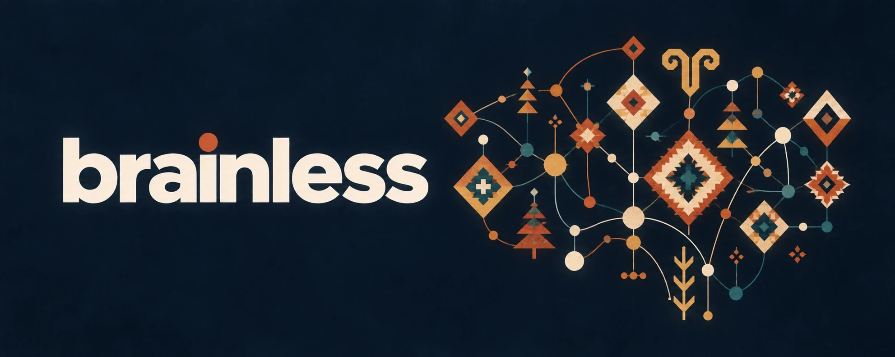

Open source · MIT · one Mac or zero-daemon LiteNotes arrive from everywhere, collect in one Markdown folder, link themselves overnight, and push back before you commit to a decision. Yours on disk, open in twenty years.
git clone https://github.com/ezapmar/brainless-public.git ~/projects/brainless
Unread notes are storage. Summaries nobody challenges are tidier storage. Here is the loop that turns a folder into a working partner.
Voice memos, whiteboard photos, links, PDFs, Gmail "Brain" threads, and clipped articles land in one folder. Nothing is tagged or filed on entry. Filing at capture time is how good thoughts die in a car park.
Every night (or right away with /ingest), the compiler summarises sources into .wiki/, links recurring concepts, weights observed post-ship outcomes above untested plans, and checks the visible Obsidian graph for orphans and leaks.
Before a real choice, /decide quotes what you believe and asks what undoing it costs. Overnight, new sources are checked against nearby pages for contradictions, and an attention audit compares stated priorities against what you actually worked on.
A decision is written as a bet with a prediction, confidence, and review date. When the date passes, the morning briefing nags until you record what actually happened, so you stop being wrong the same way twice.
No second machine, no chat relay, no VPN. I had three devices and two schedulers until the plumbing became the hobby. Everything now runs on one Mac, and only one job writes to git.
Polls the Telegram bot. Plain messages become notes, replies approve or defer proposals, and messages starting with ? return a cited answer from your local model.
Tasks sync, Gmail "Brain" label intake, pre-meeting briefs, health check, and a model-free morning briefing after 07:00 that includes wiki changes and 7-day attention gaps.
One ordered chain: ingest, digest, compile, search index, link suggestions, wiki lint, visible vault graph audit, attention audit, Sunday weeklies (dreaming, kill review, encrypted backup), then one commit and push.
Gemma 4 12B on llama-server. Eight short or private lanes are pinned in brainless.toml under local_only. If the server is down or misconfigured, the call fails closed and the text stays home.
Every outbound notice runs through a SQLite outbox (tools/notify.py): queued, retried with backoff, sent at most once per key.
Pattern redaction strips e-mails, phones, IBANs and keys. cloud_exclude folders and privacy: personal notes compile locally only; privacy: secret skips compilation. Every call logs to an egress ledger checked daily.
raw/ is strictly read-only. Human folders require explicit approval before an agent writes. The engine owns .wiki/ and can rebuild it from scratch at any time.
tools/vault_graph.py checks the Obsidian-visible vault every night. A tracked file linking into a gitignored folder turns system health red, and unexpected work/personal bridges get flagged.
Every Sunday the full vault and git history are sealed with age outside the synced folder. Sync copies mistakes everywhere in minutes; an encrypted archive waits quietly until you need it.
Same thinking method, same templates, same privacy rules. Pick how much automation you want to babysit.
The exact setup I run every day. Built for macOS with background jobs, Telegram capture, and a local 12B model.
?question capturelaunchd jobs, model-free morning briefing, weekly encrypted archive/ingest, /reply, /trace) plus scout and librarianEverything that makes the method work, with zero background services to configure.
brainless.tomladd, ingest, compile, search, graph, lint, briefing, healthLonger pieces on Medium about the habits this forced on me. Shorter technical notes on X about the architecture.
What a second brain promises, where mine broke, and the seven things I changed when I built my own.
Five months of building brainless, and what it taught me about taking notes, thinking clearly and making decisions.
The old night shift on a 2019 ThinkBook with its lid closed, before the move to one Mac.
articlebrainless, part 1 of 4. The problem, the goals, and a folder that started as a second brain.
article · seriesThe announcement post: capture, compile, search, decisions as bets, and the books underneath it.
long postNeeds git, Homebrew, Python 3.13, a Telegram bot and the Claude CLI. Fill in _Agent-Context/PROFILE.md, copy brainless.toml.example to brainless.toml, put bot secrets in ~/.config/brainless, add a Gemma 4 12B model for local lanes, then install the four jobs.
git clone https://github.com/ezapmar/brainless-public.git ~/projects/brainless
bash .agents/launchd/install.sh
Rerun after changing paths; --uninstall removes the jobs. Want zero daemons instead? Use brainless-lite.
In the office I kept saying "let us use our own brain first, then we can talk about a second brain", so when the folder needed a name I typed brainless. Not a second brain, zero brain. It ended up carrying the design rule anyway: the scripts keep the memory and the links; the thinking stays yours.